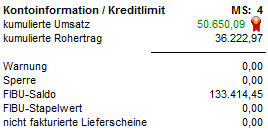
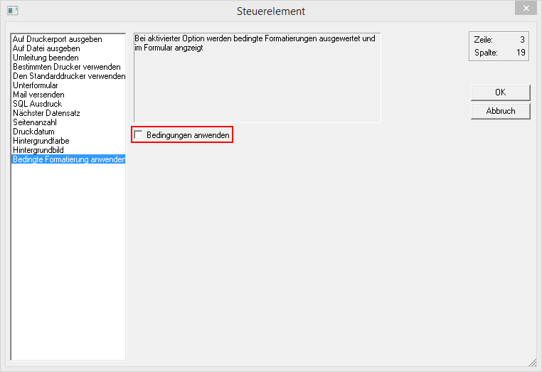
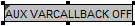
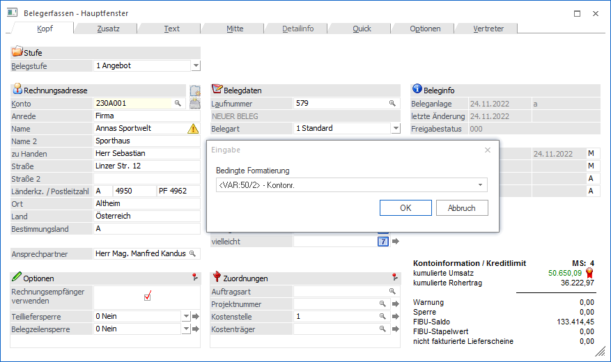
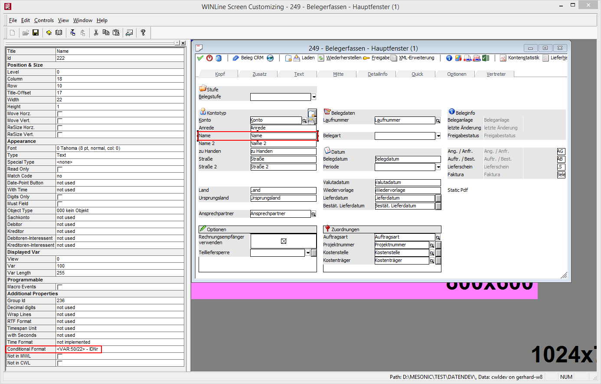

Wenn eine Variable mit einer Bedingung versehen wurde, gibt es unterschiedliche Möglichkeiten, wo die Bedingung in weiterer Folge sichtbar gemacht werden kann:
ü Bildschirmformulare
Bei allen
Bildschirmformularen, wo die angegebene Variable angedruckt wird, wird auch die
bedingte Formatierung angewendet - das gilt auch für LIST-Listen, wenn sie
gedruckt werden (Bildschirm oder Drucker), auch ohne, dass eine Änderung gemacht
werden muss.
Beispiel - Kundenumsatz in Belegerfassen

Hinweis 1
Wenn Variablen mit einder bedingten Formatierung versehen wurden und es Formulare gibt, wo diese Formatierung nicht wirken soll, so gibt es die Möglichkeit, im Formular das Steuerelement "Bedingte Formatierung anwenden", das standardmäßig aktiviert ist, auszuschalten:

Dadurch wird ein neuer Eintrag

erzeugt, der vor der ersten Variable positioniert werden muss, wo eine bedingte Formatierung hinterlegt ist. Damit wird dann die Anwendung der Bedingten Formatierung für dieses Formular (z.B. Rechnungsdruck) unterbunden.Hinweis 2
Wenn die Variable, an der die bedingte Formatierung "hängt", Teil einer Formel ist, wird die bedingte Formatierung nicht angewendet.
ü Eingabemasken
Bei Eingabemasken
gibt es zwei mögliche Varianten - es kann entweder im Fenster direkt über die
rechte Maustaste "Bedingte Formatierung" eine Zuweisung erfolgen, oder es kann
im WinLine CTK pro Eingabefeld ein "Conditional Format" hinterlegt werden.
Beispiel - Prüfung der UID-Nummer in der Belegerfassung direkt im Programm

Hinweis
Wenn die Einstellung direkt im Programm über die rechte Maustaste erfolgt, dann gilt diese für alle Benutzer / Benutzergruppen. Diese Funktion steht nur in der WinLine zur Verfügung.
Beispiel - Prüfung der UID-Nummer in der Belegerfassung in WinLine CTK
